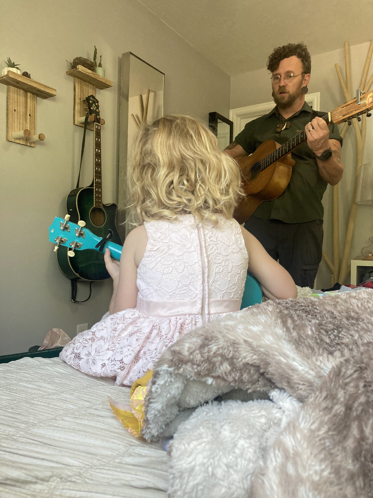

Bio

Nick is a guitarist who's just as at home fingerpicking a quiet classical piece as he is strumming through an original song on stage. His playing draws from a handful of songwriters who treat lyrics like short stories — Leonard Cohen's spare, poetic phrasing, Tom Waits' gravel and grit, and David Byrne's willingness to be a little strange with rhythm and arrangement. Those influences show up in the way Nick writes: economical, a little wry, and never afraid of an unconventional chord.
Most weeks, you'll find him at a local open mic, running through a set that mixes covers with songs he's written himself. He switches between a few different guitars depending on the mood of the song, and he's rarely seen without a flannel shirt — plaid has become as much a part of his stage presence as the music itself. Whether he's on a small stage or just playing on the porch, Nick treats every session the same way: as a chance to tell a good story.
Influences
The songwriters who shaped how Nick plays and writes.
Leonard Cohen
Sparse, poetic lyricism and a voice that leans into imperfection.
Tom Waits
Gravel, grit, and unconventional textures in every arrangement.
David Byrne & Talking Heads
Rhythmic experimentation and a willingness to be a little weird.
Creating music is like a moving quote. It's so hard to create music that is either catchy or has lyrics to move people.